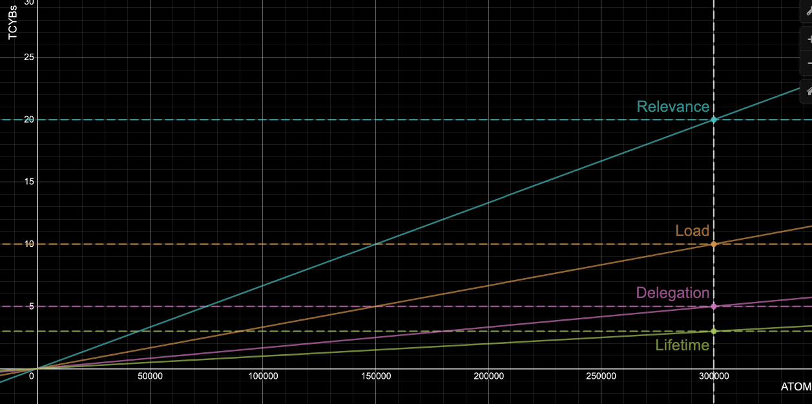

Game of Links
by savetheales on 2020-05-13
Welcome to the Game of Links!
Intro
The game is part of the distribution games planned in our whitepaper. In this document, we describe the purpose, the rules and the tools that are required to participate in the Game. The game started with euler-5, which is the technical name of our incentivized testnet that is required for the launch of the cyber network. The Game of Links is going to be held as part of the euler testnets. The game is organized by cyber~Congress. The main goal of the participants is to win as many tokens as possible, from cyber~Congress.
The key idea behind the Game of Links is to establish a starting value of relevance for the knowledge graph. It is crucial for getting quality search results from the inception of the network. All the disciplines are an integral part of the preparation and testing of the network before the launch of the mainnet.
Goals
- To distribute 10% of CYB tokens to the donors who will participate in the takeoff donation round
- To distribute up to 5% of CYB tokens to the participants of the 7 disciplines of the game, depending on how many tokens participants win against cyber~Congress
- To carry out publicly incentivized testing of go-cyber and cyber~Foundation before the launch of the mainnet
Provision
The Game of Links starts with the launch of euler-5 and ends with a snapshot of the network which will be produced after the grand-finale of the Game! Based on the Genesis snapshot of cyber the network will be computed independently by each validator who will decide to become a part of the Genesis.
The takeoff donation round will start after the approval of the governance proposal of the takeoff donation start. It will last until any of the following events will happen:
- 146 days have passed since the beginning of the takeoff donation round
- 300,000 ATOM tokens have been donated
After the end of the takeoff donation round, we will distribute EUL tokens to participants of the takeoff. This will kick-off the final round of the Game of Links.
At this time, key players with significant stakes will have a powerful impact on the results of the Game.
The final round will be played for 21 days after the distribution of EUL tokens.
Distribution
The distribution for euler-5 in the Genesis file was the following (distribution for euler-6 did not change):
| Group | Amount of EUL |
|---|---|
| Takeoff donations | 100,000,000,000,000 |
| Gifts to Ethereum, Cosmos and Urbit communities | 100,000,000,000,000 |
| Euler-4 validators | 15,000,000,000,000 |
| GOL stakers | 15,000,000,000,000 |
| Community pool | 2,000,000,000,000 |
| Test of Thrones in ATOMs (abandoned) | 1,000,000,000,000 |
The total Genesis supply is 233,000,000,000,000 EULs or 233 TEULs.
GOL tokens are the testing equivalent of THC. The distribution of GOL tokens is the following:
| Group | Amount of GOL |
|---|---|
| cyber~Congress | 8,000,000,000,000 |
| test~Auction | 7,000,000,000,000 |
The total supply of test GOL tokens for the period of the game is 15 TEUL.
How to participate
There is no face control, captchas or KYC to join the Game. All you need is a tool for playing and some tokens.
You may join the Game as a:
- Hero (validator). Set up your node and start validating
- Master (user). The builder of the Great Web. Migrate content from web2 to the Great Web or create your own and make it searchable. You can link your content with the help of cyber.page and a Ledger or with the use of CLI
- Evangelist. Attract other players, donors and become a project ambassador
- Developer. Create cool things and claim your rewards via spend proposals from the community pool
How to get tokens and which tools to use?
There are several ways to get tokens and several tools that you can use:
- Gifts. There are 100 TEULs allocated as a gift to the Cosmos, Ethereum and Urbit communities. You can check your balance using the cyber.page. For example, this is Vitalik’s gift.
- Takeoff round. You can get tokens if you will participate in the takeoff donation round.
- Faucets. We want to test the production of the auction app during GoL and this is a great opportunity for creating a faucet based on this app. You can obtain GOL tokens and claim EUL tokens to participate in the game. We expect a low price valuation for GOL, so you can fill your stake with Szhabos (1 millionth of an ETH) and uAtoms (1 millionth of an ATOM).
- Be a validator. You can get tokens via launching a validator node.
! Important
The euler testnets will use 2 special testnet tokens. One is called EUL, which is the equivalent for the CYB mainnet token. And the second is named GOL, which is an equivalent for the mainnet THC governance token.
EUL tokens have little value (in regards to price value). Their main purpose is to serve as the basis for reward calculation during the Game of Links. GOL tokens also have no significant value in terms of price. They will allow gaining EUL tokens during the game if vested. Non-vested GOL tokens do not have any value at all.
GOL tokens serve (1) as a means to provide incentivized testing of the Ethereum contracts, and (2) as a spam protection mechanism for the faucet.
DO NOT spend a significant amount of funds buying GOL during test~Auction and/or EUL over the counter. GOL tokens will be burned after the euler testnets are over. All accounts in the euler experimental networks series will be reset. All ETH and ATOM sent to the faucet during the Game of Links are donated to cyber~Congress.
To remove any confusion, here is a comparison table of the different naming during the test and the mainnet:
During euler testnets |
During cyber mainnet |
|---|---|
| test~Auction | cyber~Auction |
| GOL token | THC token |
| EUL token | CYB token |
| Takeoff donations | Not applicable |
These measures will help to reduce the risks associated with the use of Aragon contracts, Aragon plugins, cyberd software and the multisig accounts involved. Thanks for understanding.
Faucets
A faucet is up and running for the duration of the Game of Links and the test~Auction. It will help us to test the contracts before the launch of the mainnet and make it easier for participants without tokens or with a small number of tokens to join the Game. We’ve allocated 7 TGOL for the test~Auction. During this period Etherians can donate their native tokens. After that EULs and GOLs will be distributed.
Takeoff donations
The takeoff donations have 3 key goals:
- Bootstrapping the genesis validator set
- Defining the allocation for cyber~Congress (team, inventors, fund and seed donors)
- Defining the allocation for the participants of the Game of Links
The results of the Game and the allocation are significantly influenced by the results of the takeoff donations.
All CYBtokens that remain from the Takeoff, are allocated to the community pool at the end of the game.
100 TCYBs will be distributed to donors proportionally per the donated ATOMs and the order of donation transaction. The distribution function is:
f(x) = 40 * x + 1000
where f(x) - TCYB price in ATOMs, and x is amount of TCYBs tokens won
Independently of the donated amount, 100 TEULs will be distributed to all takeoff donors after the takeoff round will end, proportionally per the donated ATOMs. These EULS are to be used during the 21-day final of the Game, in the Game of Links.
Disciplines
There are seven disciplines to participate in the Game of Links, which are subdivided further into 2 different types:
Dependent on takeoff donations:
- The relevance of links submitted (the higher the rank of the content and earlier you cyberlink, the better)
- The bandwidth load of every participant (the more you link, the better)
- Life summary of every validator (the longer your uptime is, the better)
- The amount delegated to each validator (the more a validator is delegated, the better)
Independent of takeoff donations:
- Full validator set (the more validators there are, the better)
- Community pool (experiment and participate in governance)
euler-4validator rewards (rewards distributed to validators for the last testnet)
The following criteria are applied for the allocation of Game of Links:
| Group | Amount CYB | %, of mainnet supply |
|---|---|---|
| takeoff donations | 100,000,000,000,000 | 10% |
| disciplines depends on takeoff | up to | |
| relevance | 20,000,000,000,000 | 2% |
| load | 10,000,000,000,000 | 1% |
| delegation | 5,000,000,000,000 | 0.5% |
| lifetime | 3,000,000,000,000 | 0.3% |
| disciplines independs on takeoff | ||
| full validator set | 5,000,000,000,000 | 0.5% |
euler-4 rewards |
5,000,000,000,000 | 0.5% |
| community pool | 2,000,000,000,000 | 0.2% |
There are no limits for participating. You can set up your validator node to get a reward for validators uptime or you can link CIDs and load network bandwidth. You can create any promotion around your validator and collect stakes from users. You can do all of those things together. Simply play and monitor the results.
There are 4 disciplines depends on the number of donated ATOMs. If the 300,000 ATOM donation cap will not be reached, the remaining CYB tokens from the disciplines will be distributed back to cyber~Congress. The logic is the following: the more has been donated, the more rewards the participants acquire, the less CYB tokens are allocated back to cyber~Congress.

Participants that want to get CYB tokens in the Genesis file of the mainnet but cannot play, can donate ATOMs. Therefore, increasing the percentage of payouts to other participants.
In case of the discipline do not play out or play out partially, the remaining tokens will be allocated back to the cyber~Congress multisig.
Relevance
This is the most difficult discipline of the Game. Users may link everything that you believe is important for the future of the web.
Each CID has a rank with a certain weight (depending on the dynamic parameters outlined in the whitepaper). In the end, those ranks get ranged according to their weight. The higher the better.
There are up to 20 TCYBs allocated for the top 1000 CIDs and the top 10 agents that linked those CIDs.
CYB tokens will be distributed to the top 1000 CID proportionally to their ranks.
In the case that 300,000 ATOMs are donated, rank ratios of the top 1000 CIDs and the sum of all of their ranks, are multiplied by max CYBs allocated for the relevance discipline.
Thereafter, these rewards will be distributed between the 10 Masters in the order of their link submission, in accordance to the power law:

This way we can calculate allocation for any of the CIDs in the top using Euler’s method for the sum of harmonic series:


Where  is Euler–Mascheroni constant =0.57721…,
is Euler–Mascheroni constant =0.57721…,  .
.
Please note! Only retrievable CIDs take part in the Game. We assume that Masters should also be content providers and responsible for content availability. Please make sure that your content is pinned and responding. Otherwise, the unreachable CIDs will be excluded and rewards will be distributed between
1000 - NCIDs, where N is the number of unreachable CIDs.
Load
According to our resource credits model, there are no transactional fees. We use bandwidth. The value of the users’ bandwidth is the ability of the user to send messages, make links and transact.
Each message type has an assigned bandwidth cost. For this discipline, we’re calculating ONLY the bandwidth spent on linking.
All the bandwidth spending data is available at the account_bandwidth?address= RPC. After the game, 6 TCYBs will be distributed to players addresses according to their weight coefficient of the spent bandwidth. In other words, per how much bandwidth they have spent on linking during the Game. The bandwidth decreases if the network has a low load and increases if the load is high, between 0.01 and inf. This means that you can spend the same amount of bandwidth for 1000 links in the load of the network is low and the same situation can apply to 10 links. The bandwidth spent on linking is called Karma.
The network has a desirable bandwidth of 16000 blocks (~24 h). If the current bandwidth is equal to this value it means everything is normal and the multiplier parameter is 1.00. In all other cases, the multiplier is corrected dependent on the upload or the download of the network.
The value of the multiplier is recalculated every 10 blocks (~1 minute) according to the load of the network and has a 16000 blocks (~24 h) window. You can always find it on the Game monitors.
A users bandwidth depends on their stake:

The genesis  params are available in the launch-kit repo.
params are available in the launch-kit repo.
Users rewards, in case 300,000 ATOMs have been donated, are calculated in the following way: the ratio of bandwidth spent by the user for cyberlinking and the sum of all spent bandwidth for cyberlinking multiplied by the max CYBs allocated for the load discipline.
Lifetime
The easiest discipline. You just need to set up your validator node and monitor its lifetime. The lifetime means blocks pre-commits of a validator.
Important! Your validator should be in the set of active validators! Watch your stake!
The rewards are calculated as the ratio of the validator’s precommits and the sum of all the precommits multiplied by max CYBs allocated for the lifetime discipline.
Delegation
Amount of the delegated CYB tokens to each validator. The purpose of this discipline is to spread information about the gift. The logic is the following, the more information you spread, the more is delegated to you. But, of course, this is not enough. You also need to earn your validators reputation by having an efficient infrastructure and providing constant lifetime. This works as a promotion of your services to the early community. We’ll allocate up to 5 TCYB, proportionally to the staked tokens on validators on the last block of the Game. If 300,000 ATOMs have been donated, every validator will get:

Full validator set
If the set of validators will increase to or is equal or over 100, and this number of validators can last for 10,000 blocks, we will allocate an additional 2 TCYB to validators who took part in this discipline and were active in the 10,000 blocks period. If the number of validators will increase to or is over 146, under the same conditions we will allocate an additional 3 TCYB. The rewards in that discipline will be distributed to validators proportionally to their pre-commits from the CURRENT network start, up until the discipline is complete.
Community pool
2 TCYB are allocated to the community pool within the cyber network. During the euler testnets, we expect some experiments with governance from the community. All of the governance decisions of the community pool spend during the testnet, will be migrated to the mainnet. There can be multiple examples of claiming rewards in this discipline. Development of features, explorers, improvements to the ranking algorithm. Other things can be evangelism or marketing tasks, like posting, user involvement, guides and so on. Finally, this can be, community building, like: meetups, online meetings, dev meetings, conferences, etc. Please note, that following the OBEP governance propsal, 1 TCYB is allocated to the evangelism program.
euler-4 rewards
A thank you to our early validators for helping to test and secure the euler-4 testnet. They have kept their nodes running for a year for a Greater future.
Crisis protocol
We can not guarantee that everything will go as expected. The software can be vulnerable. If anything goes wrong, cyber/~Congress as the organiser of the game, has the full power of deciding whether the game must be restarted without any rewards or restarted with partial rewards, depending on the circumstances. In the case, such a circumstance shall arise we are going to count with community opinions.
Please read the launch protocol very carefully. It defines the rules for fault handling. We define 2 danger zones with probabilities to unexpected behaviour and one zone as an intersection of the defined zones:
- Network running
- Contracts running
- The intersection of the two above
In case anything goes wrong, we’ve prepared a crisis protocol.
If the network will fail:
- Stop the contracts (claim app)
- Save current
eulersnapshot - Relaunch next
eulerwith previouseulergenesis.json - Start the contracts (claim app)
If the contracts will fail:
- Stop the contracts (claim app)
- Pool bounty
- Redeploy the contracts (claim app)
- Continue the auction
If everything gets fucked-up from both ends, then:
- Stop the contracts (claim app)
- Save current
eulersnapshot - One week pause for community discussions. And for cyber~Congress to make a decision
Conclusion
At first glance, the euler distribution and the Game rules look pretty complex. This is not true.
A good UI of the cyber.page app is intended to make playing easy and clear. We expect the cyber network to launch with a loaded knowledge graph and a nice distribution curve. The Game will help to achieve this.
This is a good chance for everyone to become an early adopter of the #fuckgoogle philosophy and the Great Web.
Do it. Cyber it.
Updates
On the 05.05.2020, following the initial take-off, we submitted a governance proposal for a new takeoff and a distribution change. The new distribution is beneficial to both the current stakeholders and future participants.
On the 24.02.2020, following a blocking error with bandwidth limiting bug, we have realesed a post, describing the migration from euler-5 –> euler-6 and the need to activate the crisis protocol for the Game of Links (GoL). The instruments we had did not allow us to resolve the problem on-chain, but since then the bug has been fixed in the new version of go-cyber. Players that will join the network from euler-6 are not required to take any actions. Players that participated in the game starting from euler-5m should follow this guide to re-link cyberlinks.
References
- The cyber whitepaper
- Cyber implementation on Cosmos-SDK
- Aragon claim app
- Cyber web app
- Launch kit repo
- Power law on wikipedia
- Euler’s method
- Chain params
- The launch protocol
- Homestead doc
- Playing GoL
- Gift FAQ
Acknowledgements
- @serejandmyself
- @xhipster